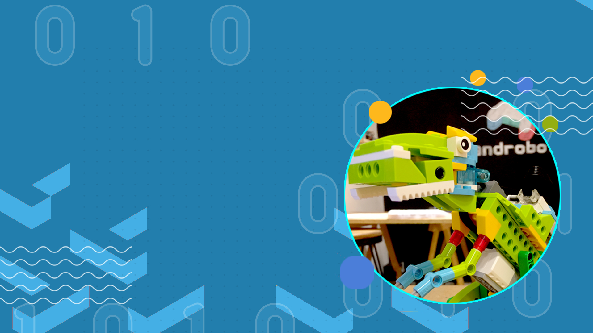

Los chicos y chicas comienzan a explorar el mundo de la robótica mediante el armado de estructuras simples y la interacción con distintos dispositivos tecnológicos.
Se fomenta la creatividad, la lógica y el aprendizaje a través del juego.
Para niños y niñas de 7 a 10 años inclusive. Por medio de la experimentación, aprenderán a crear y diseñar su propio robot que responderá a determinadas acciones del mundo real. Actividades de creación digital (videojuegos, robótica, inventos, etc.) para estimular la creatividad, el trabajo en equipo y la resolución de problemas generando interés por las nuevas tecnologías a través de la experimentación. Gracias a diferentes soluciones tecnológicas de innovación educativa, los más pequeños crean y diseñan en estos talleres su propio robot utilizando y experimentando con Little Bits, Scratch, Makey Makey, Raspberry Pi, Lego, entre otros. Por medio de un trabajo individual y en equipos, emplearán un aprendizaje totalmente práctico, colaborativo y creativo a partir de la experimentación lúdica en actividades con enfoque STEAM.
Modalidad presencial en Mar del Plata.
-
Edad
7 a 10 años
-
Duración
1 clase semanal
-
Modalidad
Presencial
-
Materiales
Incluidos
- Lunes y Miércoles: 13:30 a 15 / 15:30 a 17:00
- Martes y Jueves: 13:30 a 15 /
$70.000 mensual (incluye material de trabajo).
Así se vive el taller